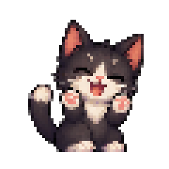
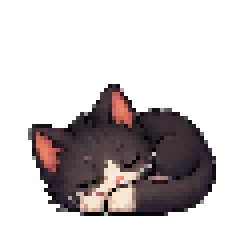
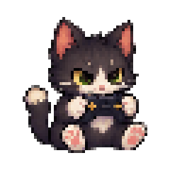
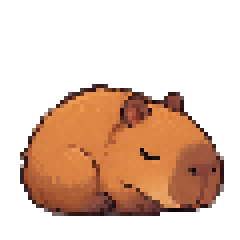

Small pet.
Big personality.
Curious looks. Sleepy yawns. A happy little dance. Sixteen expressive poses, and plenty of small things to do.



A small world of its own, right beside yours.
A pixel companion that follows your flow,
keeps you company, and reminds you to pause.
A little stretch.
A deep breath. A fresh start.
Go on, say hello. Click to pet, or drag your companion around.
Five little personalities. One spot on your desktop.
Pick a friend to try in the playground above.
A companion, not another dashboard.
A little presence when you work. A gentle nudge when you need one.
Curious looks. Sleepy yawns. A happy little dance. Sixteen expressive poses, and plenty of small things to do.



A small world of its own, right beside yours.
Drag your pet between monitors. Let it perch on a window. Make it as small or large as you like.
Focused on a project? Listening to music? Your companion eases into the moment with you.
Choose a rhythm that feels right. Nudge offers gentle reminders, a snooze when you need it, and short resets for your eyes, shoulders, and breathing.
Make room for a break
Find your own pace.Download for Mac, open the DMG, and drag nudge into Applications.
Choose a companion, find its spot, and set your break reminders.
Your pet keeps you company. Your activity summaries stay on your Mac.
Yes. Nudge is free and open source. No account, subscription, or sign-in is required to use the app.
Nudge groups your active apps into categories and records time spent working or resting. Settings and activity are stored locally. Read what stays on your Mac.
You can move and resize your companion, snooze a reminder, or hide it with a shortcut. Perching follows a window without bringing that window to the front.
The universal macOS download includes Apple silicon and Intel binaries. The current build is not notarized. Installation steps are included below.
Meet your new companion. Free for your Mac.
Download for MacUniversal macOS installer · Apple silicon + Intel · 23.9 MB
App ZIP, checksums & release notes (opens in a new tab)This community build is not notarized. After dragging nudge into Applications, open it. If macOS blocks it, review the download in System Settings → Privacy & Security and choose Open Anyway.
Only open a download you trust. You can inspect the source and checksums on the release page (opens in a new tab).